Research
Publications
Robust subset selection
Ryan Thompson
Computational Statistics and Data Analysis, 2022 [arXiv]
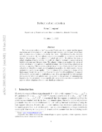  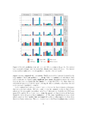
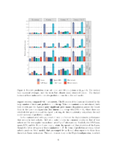  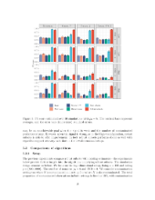 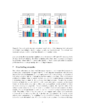
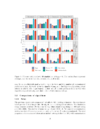 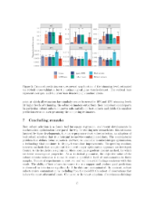
Optimal selection of expert forecasts with integer programming
Dmytro Matsypura, Ryan Thompson, and Andrey Vasnev
Omega, 2018 [SSRN]
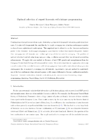 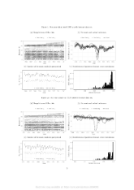  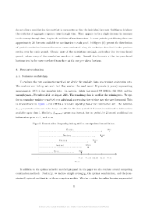 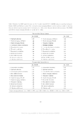 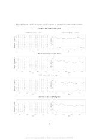
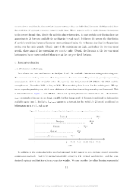 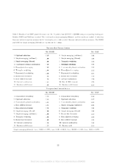 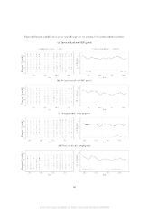
Preprints
Global combinations of expert forecasts
Yilin Qian, Ryan Thompson, and Andrey Vasnev
2022 [arXiv]
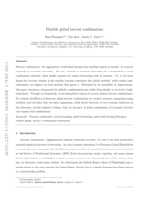 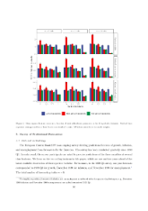 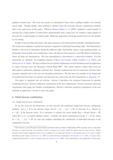 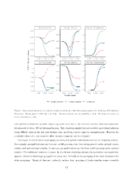  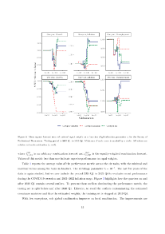
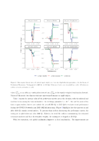
Familial inference
Ryan Thompson, Catherine Forbes, Steven MacEachern, and Mario Peruggia
2022 [arXiv]
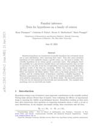 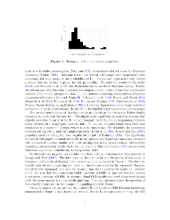 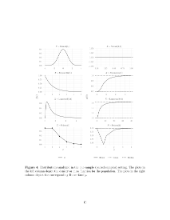 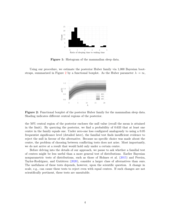 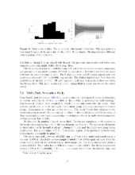 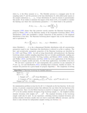
Group selection and shrinkage: Structured sparsity for semiparametric models
Ryan Thompson and Farshid Vahid
2022 [arXiv]

 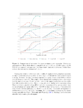 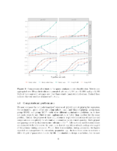 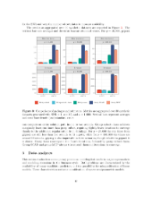 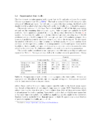
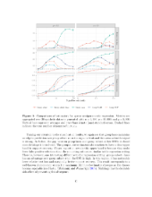 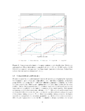 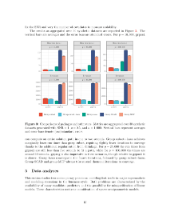 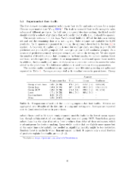